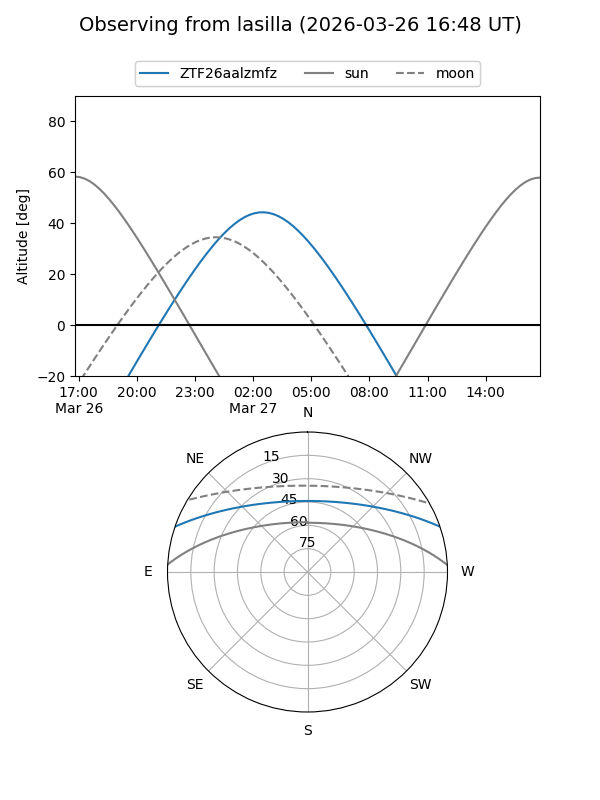
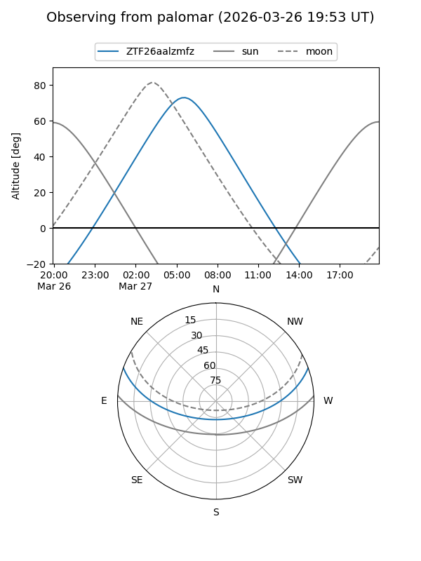

ZTF26aalzmfz
Target ZTF26aalzmfz at 2026-03-27 05:22
Aliases and brokers:
FINK: link
Lasair: link
ALeRCE: link
alt names
ZTF26aalzmfz (ztf,fink_ztf)
Coordinates:
equatorial (ra, dec) = 150.6741,+16.54330
equatorial (HMS+DMS) = 10:02:41.78,+16:32:35.88
galactic (l, b) = (219.1794,+49.64067)
Flags:
Photometry:
last ztfg=17.06
1 ztfg detections
Lightcurve
Visibility


Additional plots